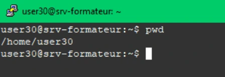
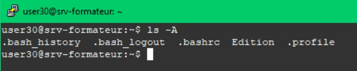
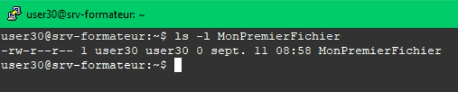
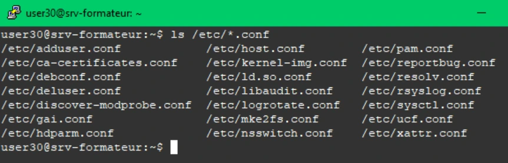
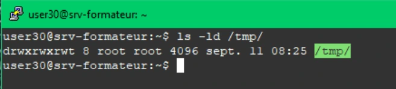

Transcription du document de formation ; texte et captures isolées sont distincts de l’aide pédagogique.
TP du Module 04 – Fichiers et dossiers sous Linux
Avant de démarrer ce TP, il convient d’avoir suivi les vidéos du module 4 et d’avoir effectué le TP précédent.
Durée estimée
45 à 60 minutes
Dans le module que vous venez de parcourir, vous trouverez les commandes nécessaires pour répondre aux questions.
pwdls -Atouch MonPremierFichierls -l MonPremierFichier

ls /etc/*.confls -ld /tmp

